Aesthetically, I prefer things that are organic, broken, torn, and are in a state of growth. What is inspirational for me are the battles between good and evil, fight or flight, and darkness and light. It is also the act of contorting realism, simplifying chaos, and extracting the inward...outward. My work is based on these conflicts, their resolutions, and the spaces in-between. Creating art, for me, is a sort of vessel for visually communicating these absurd and contrasting emotions through a type of creative metamorphosis and misplacement in which both my art and self are in a constant state of change.
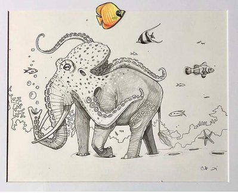
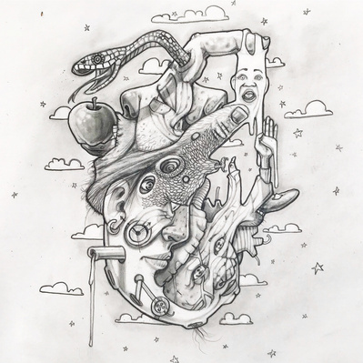
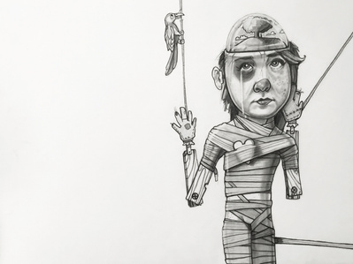
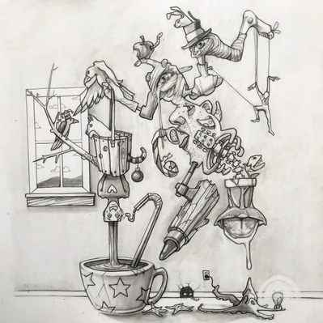
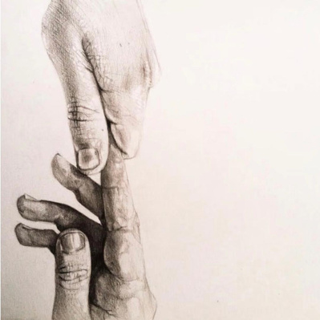
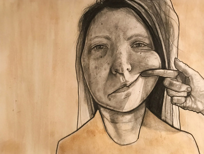
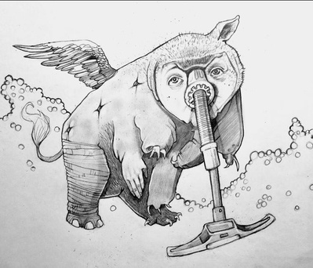
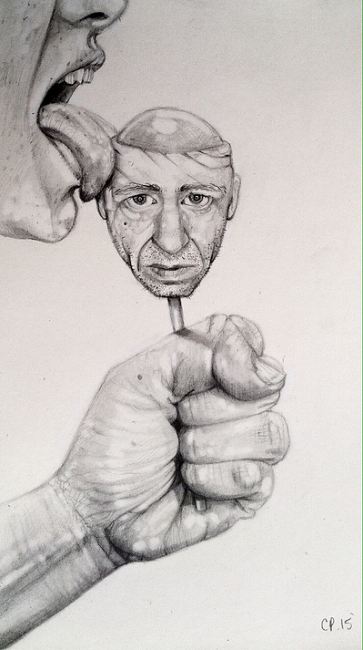
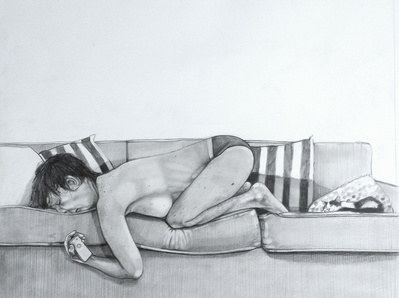
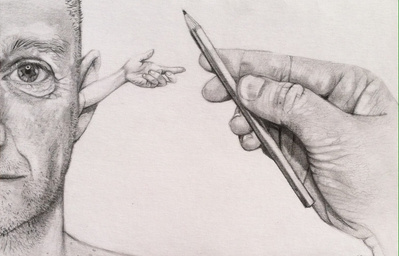
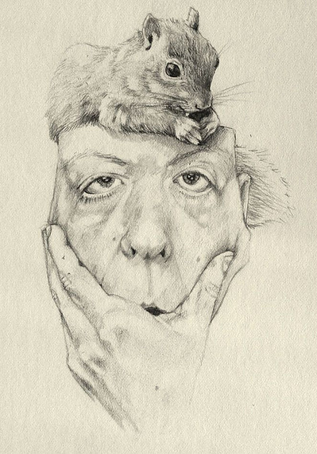
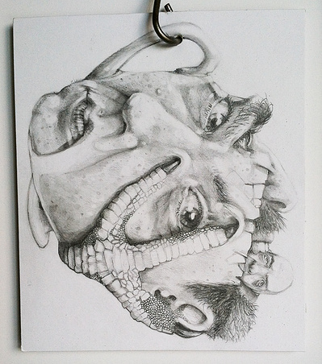
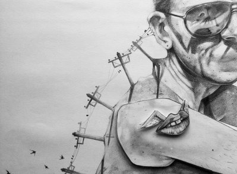
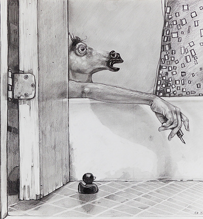
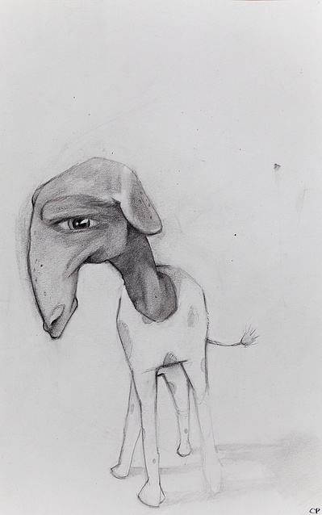
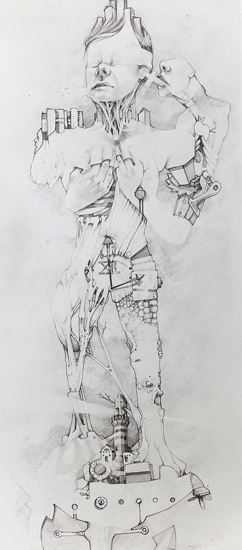
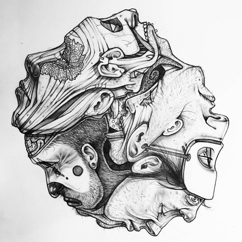
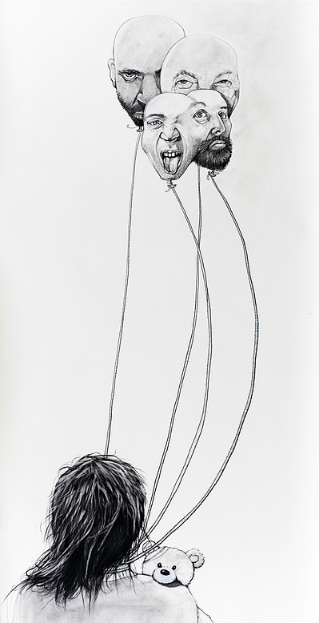
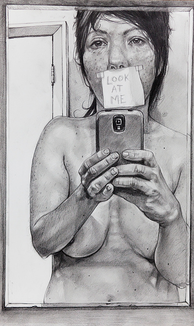
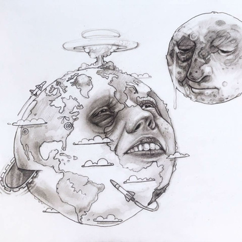
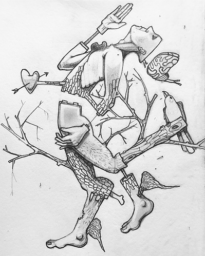
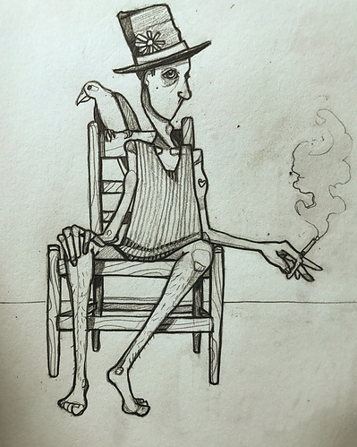
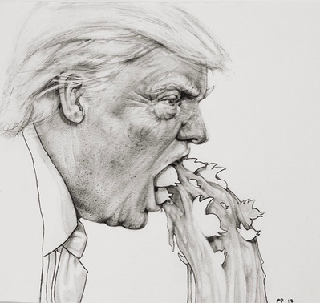
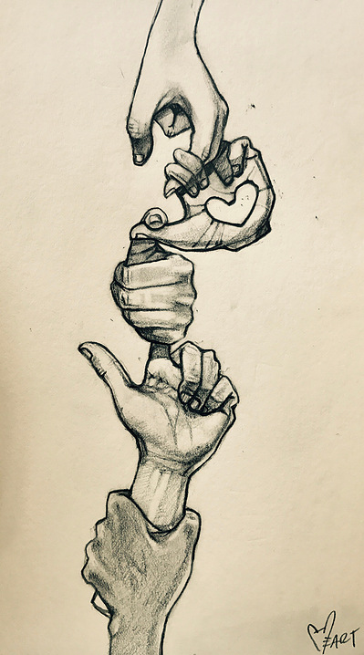
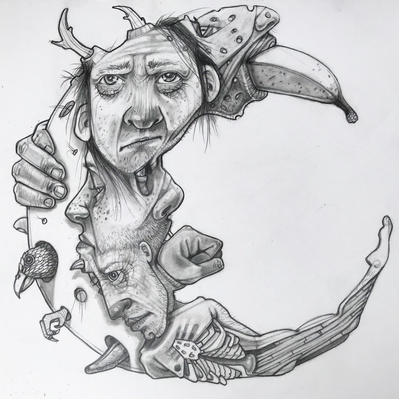
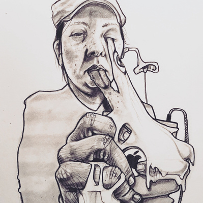
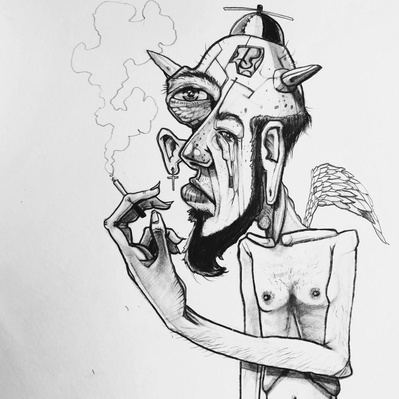
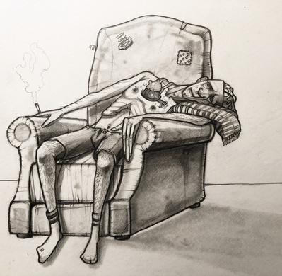
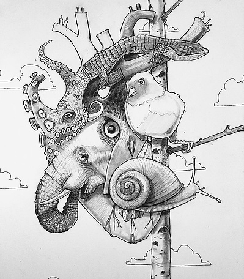
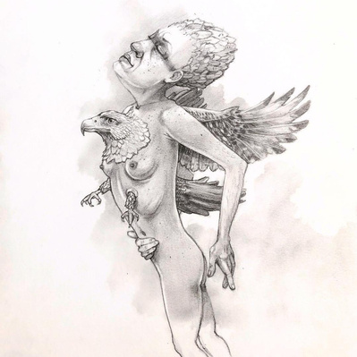
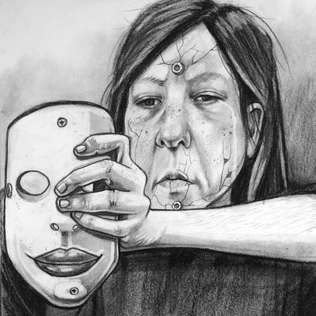